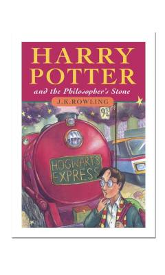

HPSehrgar bola Xogvarts maktabida o'zining ilk sarguzashtlarini boshlaydi.
Oddiy oilada yashab kelayotgan yetim bola Harri Potter o'zining aslida sehrgar ekanligini bilib oladi va Xogvarts Sehrgarlik maktabiga yo'l oladi. Bu yerda u o'zining o'tmishi va ota-onasining sirli qismati haqida ilk bor xabar topadi. Roman sehrli olam va do'stlik haqidagi mashhur turkumning ilk kitobidir.